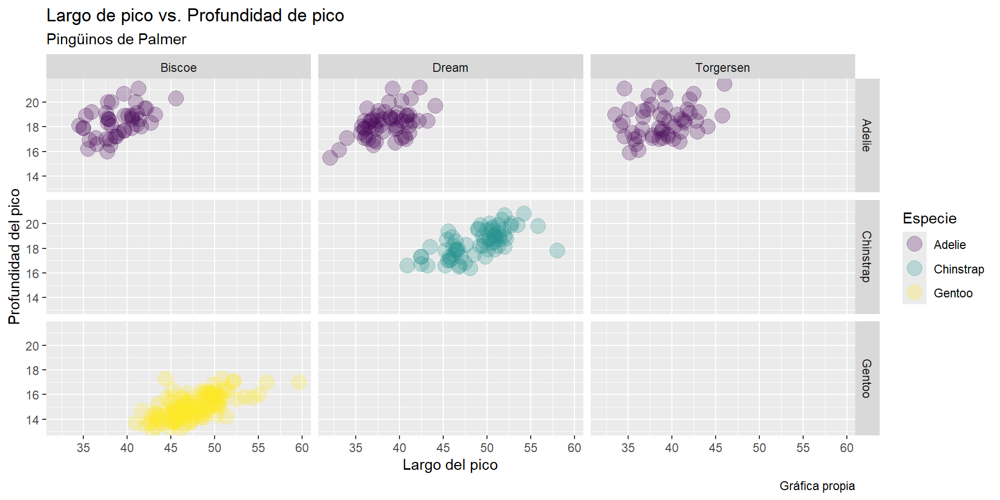
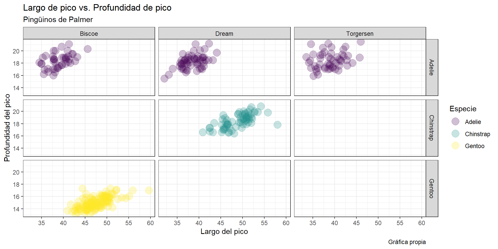
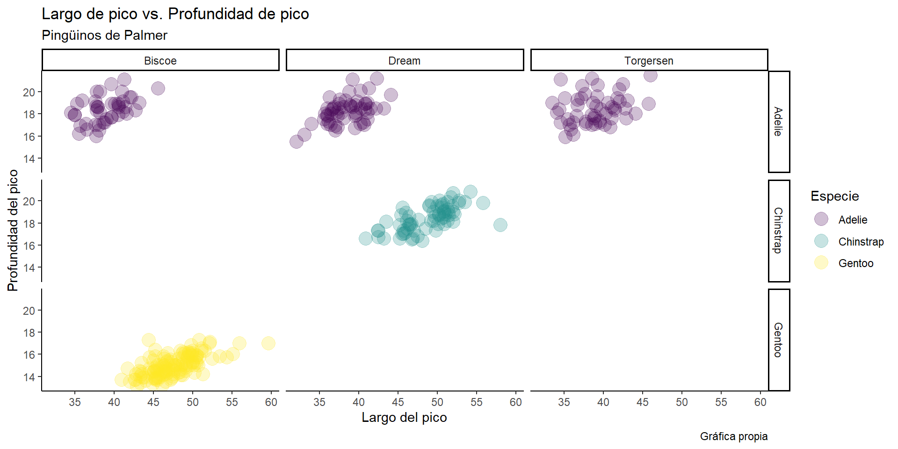
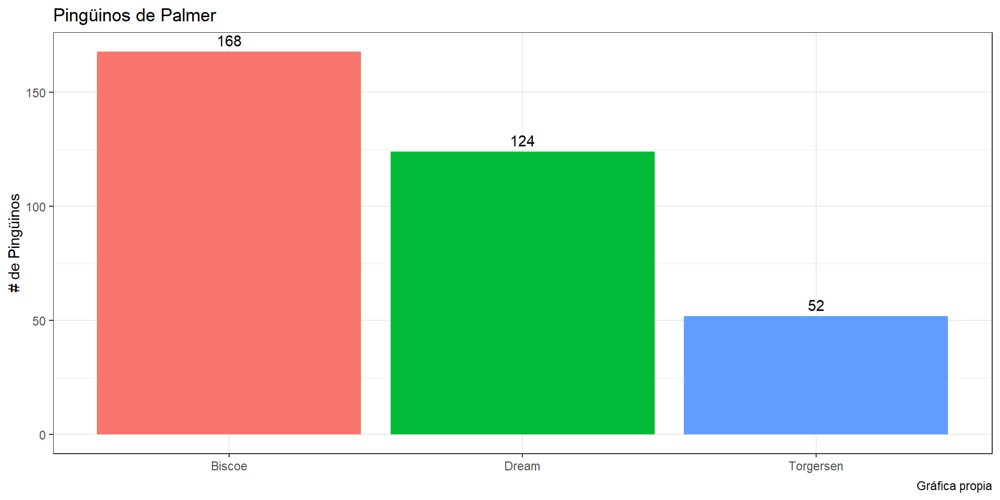
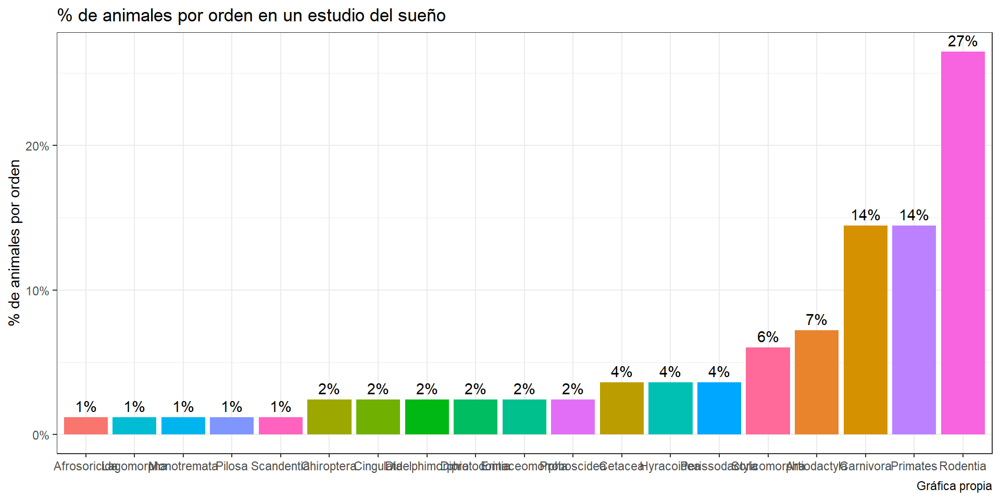
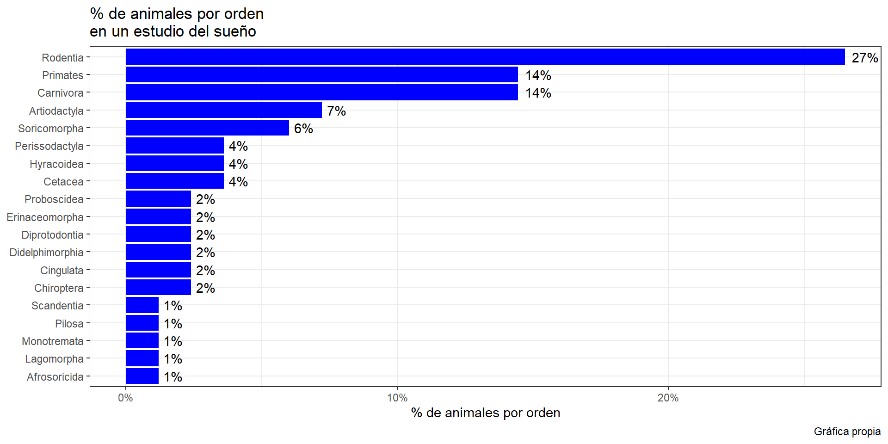
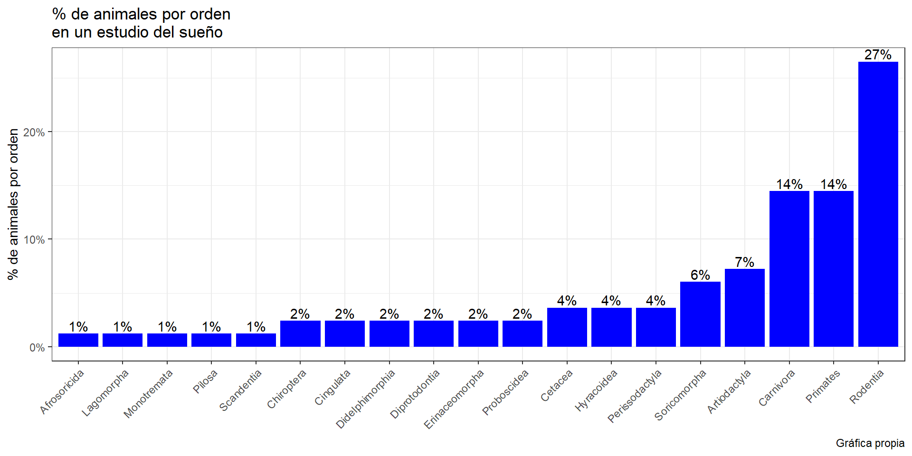
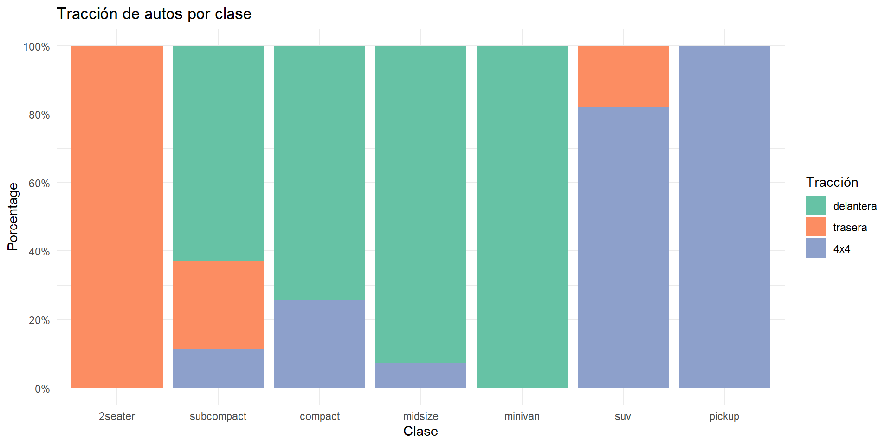
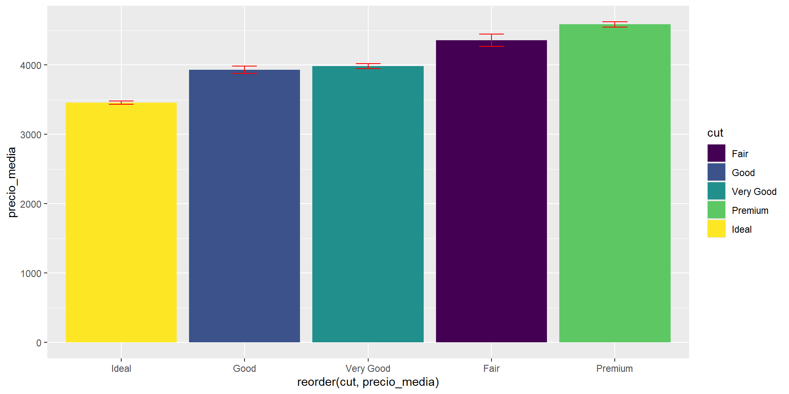
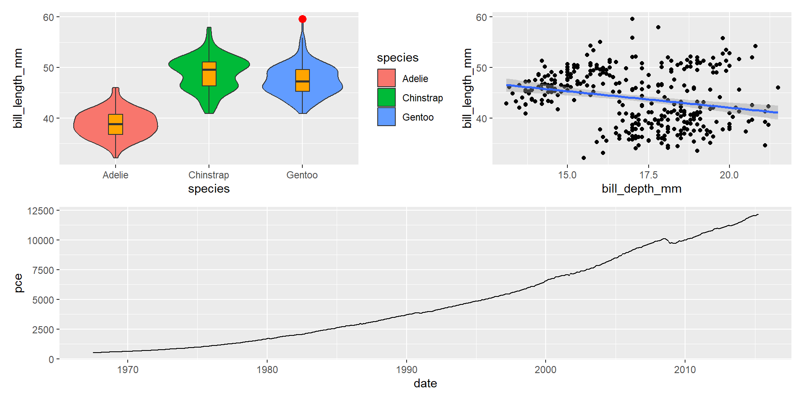

Módulo 4: Visualización de datos con {ggplot2}
Mauricio Moreno, PhD

Introducción
Usaremos los datos del
{palmerpenguins}así también como los datos del archivo de Excel “rotaXLS.xlsx”.Paquetes adicionales:
{viridis},{patchwork},{scales}:install.packages("viridis", "patchwork", "scales")Aprenderemos paso a paso cómo funciona
{ggplot2}dando un vistazo a sus funciones y objetos.
{ggplot2}
{ggplot2}es un paquete de gráficos creado por Hadley Wickham en 2005 como una opción alternativa a los gráficos base de R (es de hecho este paquete el que inició el{tidyverse}).Se basa en añadir elementos a un gráfico capa por capa.
{ggplot2}puede usar tanto tablas anchas como largas. Sin embargo, en la mayoría de los casos, se explotan más sus capacidades al utilizar tablas largas.Presenta varias ventajas, entre ellas:
Mayor versatilidad al integrar funciones predeterminadas que permiten cambiar entre tipos de gráficos fácil y rápidamente.
Amplia variedad de paletas de color y estilos (útiles para crear gráficos profesionales y listos para publicación).
Basta cantidad de librerías accesorias para gráficos especializados.
Su funcionamiento se basa principalmente en:
El argumento de mapeo (
mapping)y, Geometrías (
geom_).
Función de inicio ggplot
Constituye la primera capa o la base para llevar a cabo un gráfico.
Posee dos argumentos principales:
datapara indicar la tabla de datos a usarsemappingpara indicar las variables que gobernarán los ejes coordenados del gráfico
Función de inicio ggplot

Función de inicio ggplot
No es necesario el usar todo el tiempo el nombre de los argumentos en la función ggplot:

Geometrías
Las geometrías son objetos que serán superpuestos en la base creada por la función de inicio.
En general, están nombradas con la preposición
geom_seguida de su clase.Existen una variedad amplia de geometrías:
geom_barpara gráficos de barrasgeom_linepara gráficos de lineasgeom_boxplotpara gráficos de caja y bigotegeom_histogrampara histogramasgeom_densitypara densidades
Para añadir geometrías y otras opciones a nuestro gráfico base usamos los operadores:
+, ó%+%. Este último no es tan común, ya que sobre-escribe los datos originales.
Geometrías
Estéticas de las geometrías (aesthetics)
Las geometrías tienen argumentos en común independientemente de sus específicos usos.
Entre estas están:
alphadetermina el nivel de transparencia (entre 0 y 1).filldetermina el color de relleno de una geometría. Puede ser agregado de manera manual o en función de otra variable.colorocolourdetermina el color del contorno de una geometría. Puede ser agregado de manera manual o en función de otra variable.
Existen aesthetics más específicos que funcionarán únicamente con ciertas geometrías, tales como:
size, determina el tamaño de los puntos en la geometría de puntos (geom_point)linetype, con 6 posibles valores permite seleccionar el estilo de línea.linewidthdetermina el grosor de una línea.lineenddetermina el estilo de los extremos de una línea.shapedetermina el estilo de los puntos a mostrarse (25 posibles estilos)
Estéticas de las geometrías (aesthetics)
Formato básico de figuras en {ggplot2}
Agrupaciones
Se pueden asignar estéticas dependiendo de los grupos presentes en los datos.
Podemos definirlo en la función de mapeo.
Escalas
Paletas de color
Una de las razones por las cuales
{ggplot2}es tan popular, es la relativa sencillez de usar distintas paletas de color.Al no ser un curso dedicado a visualización de datos, nos limitaremos a explorar la oferta de la librería
{viridis}.{viridis}ofrece 8 paletas de color basadas en secuencias de azul y amarillo que evitan en la medida de lo posible el color rojo. Es recomendada por ciertos Journals al ser amigable con personas daltónicas.
Paletas de color
Facetas
Para generar gráficos de facetas (o también conocidos como paneles),
{ggplot2}cuenta con dos funciones:facet_wrap: produce una figura de paneles en 2-D definida por una sola variablefacet_grid: produce una figura de paneles en 2-D definida por variables que forman filas y columnas

Facetas con facet_wrap
facet_wrap con una variable
Facetas con facet_wrap
facet_wrap con dos variables
Facetas con facet_grid
Etiquetas
ggplot(penguins,
aes(x = bill_length_mm,
y = bill_depth_mm,
color = species)) +
geom_point(alpha = 0.25, size = 5) +
scale_x_continuous(breaks = seq(30, 60, 5)) +
scale_y_continuous(breaks = seq(10, 24, 2)) +
scale_color_viridis(discrete = T) +
facet_grid(species~island) +
labs(title = "Largo de pico vs. Profundidad de pico",
subtitle = "Pingüinos de Palmer",
caption = "Gráfica propia",
x = "Largo del pico",
y = "Profundidad del pico",
color = "Especie")
Estilos
{ggplot2}nos ofrece 10 estilos predeterminados para la presentación de nuestras figuras.
ggplot(penguins,
aes(x = bill_length_mm,
y = bill_depth_mm,
color = species)) +
geom_point(alpha = 0.25, size = 5) +
scale_x_continuous(breaks = seq(30, 60, 5)) +
scale_y_continuous(breaks = seq(10, 24, 2)) +
scale_color_viridis(discrete = T) +
facet_grid(species~island) +
labs(title = "Largo de pico vs. Profundidad de pico",
subtitle = "Pingüinos de Palmer",
caption = "Gráfica propia",
x = "Largo del pico",
y = "Profundidad del pico",
color = "Especie") +
theme_bw()
Gráficos como objetos
A diferencia de los gráficos base de R (no cubiertos a detalle en este curso), con
{ggplot2}tenemos varias ventajas:Añadir geometrías o estéticas sobre una figura sin necesidad de volver a ejecutar nuestro código.
Poder organizar gráficos en disposiciones más complejas con la ayuda de
{patchwork}como veremos más adelante.Exportar nuestros gráficos en forma de objetos de R sujetos a cambios posteriores.
Gráficos como objetos
fig1 <- ggplot(penguins,
aes(x = bill_length_mm,
y = bill_depth_mm,
color = species)) +
geom_point(alpha = 0.25, size = 5) +
scale_x_continuous(breaks = seq(30, 60, 5)) +
scale_y_continuous(breaks = seq(10, 24, 2)) +
scale_color_viridis(discrete = T) +
facet_grid(species~island) +
labs(title = "Largo de pico vs. Profundidad de pico",
subtitle = "Pingüinos de Palmer",
caption = "Gráfica propia",
x = "Largo del pico",
y = "Profundidad del pico",
color = "Especie") +
theme_bw()
fig2 <- fig1 + theme_classic()
fig2
Geometrías estadísticas
Otra funcionalidad importante son las geometrías estadísticas. Entre ellas:
geom_smooth: grafica regresiones sobre nubes de puntosgeom_errorbarygeom_errorbarh: grafican lineas de error verticales y horizontales respectivamente.geom_ribbon: grafica nubes sombreadas que pueden representar varios estadísticos como errores estándar, intervalos de confianza, etc.
Geometrías estadísticas
ggplot(penguins,
aes(x = bill_length_mm,
y = bill_depth_mm,
color = species)) +
geom_point(alpha = 0.25, size = 5) +
scale_x_continuous(breaks = seq(30, 60, 5)) +
scale_y_continuous(breaks = seq(10, 24, 2)) +
scale_color_viridis(discrete = T) +
facet_grid(species~island) +
labs(title = "Largo de pico vs. Profundidad de pico",
subtitle = "Pingüinos de Palmer",
caption = "Gráfica propia",
x = "Largo del pico",
y = "Profundidad del pico",
color = "Especie") +
theme_bw() +
geom_smooth(method = "lm")Anatomía de un ggplot

Imagen tomada de aquí
Tipos de gráficos
Introducción
En resumen, los tipos usados con más frecuencia, dependiendo del tipo de datos son:
Univariados
Datos categóricos
Datos cuantitativos
Bivariados
Datos categóricos vs. datos categóricos
Datos cuantitativos vs. datos cuantitativos
Datos categóricos vs. datos cuantitativos
Gráficos univariados categóricos
Gráficos de barras
Gráficos de barras
Gráficos de barras
Ejes con porcentajes usando {scales} y {ggplot2}
Gráficos de barras
Añadiendo texto
library(dplyr)
plt_resumen <- penguins |>
count(island)
ggplot(plt_resumen,
aes(x = island,
y = n,
fill = island)) +
geom_bar(stat = "identity") +
geom_text(aes(label = n), vjust = -0.5) +
labs(title = "Pingüinos de Palmer",
caption = "Gráfica propia",
x = NULL,
y = "# de Pingüinos") +
theme_bw() +
theme(legend.position = "none")
Gráficos de barras
Arreglando texto en los ejes (y otros detalles)
library(dplyr)
plt2_resumen <- msleep |>
count(order) |>
mutate(pge = n / sum(n),
pge_tex = paste0(round(pge * 100), "%"))
ggplot(plt2_resumen,
aes(x = reorder(order, pge),
y = pge,
fill = order)) +
geom_bar(stat = "identity") +
geom_text(aes(label = pge_tex), vjust = -0.5) +
labs(title = "% de animales por orden en un estudio del sueño",
caption = "Gráfica propia",
x = NULL,
y = "% de animales por orden") +
theme_bw() +
theme(legend.position = "none") +
scale_y_continuous(labels = scales::percent)
Gráficos de barras
Arreglando texto en los ejes (y otros detalles)
library(dplyr)
plt2_resumen <- msleep |>
count(order) |>
mutate(pge = n / sum(n),
pge_tex = paste0(round(pge * 100), "%"))
ggplot(plt2_resumen,
aes(x = reorder(order, pge),
y = pge)) +
geom_bar(stat = "identity", fill = "blue") +
geom_text(aes(label = pge_tex), hjust = -0.25) +
labs(title = "% de animales por orden\nen un estudio del sueño",
caption = "Gráfica propia",
x = NULL,
y = "% de animales por orden") +
theme_bw() +
scale_y_continuous(labels = scales::percent) +
coord_flip()
Gráficos de barras
Rotando el texto en los ejes
library(dplyr)
plt2_resumen <- msleep |>
count(order) |>
mutate(pge = n / sum(n),
pge_tex = paste0(round(pge * 100), "%"))
ggplot(plt2_resumen,
aes(x = reorder(order, pge),
y = pge)) +
geom_bar(stat = "identity", fill = "blue") +
geom_text(aes(label = pge_tex), vjust = -0.25) +
labs(title = "% de animales por orden\nen un estudio del sueño",
caption = "Gráfica propia",
x = NULL,
y = "% de animales por orden") +
theme_bw() +
scale_y_continuous(labels = scales::percent) +
theme(axis.text.x = element_text(angle = 45,
hjust = 1))
Otros tipos de gráficos univariados categóricos
Gráficos de pastel: paquete
{ggpie}Diagramas de árboles: paquete
{treemapify}
Gráficos univariados Cuantitativos
Histogramas
Gráfico de densidad kernel
Gráficos bivariados Categórico vs. Categórico
Gráfico de barras apiladas
Gráfico de barras agrupadas
Gráfico de barras agrupadas
Gráfico de barras segmentadas
Agregando más formatos
library(scales)
ggplot(mpg,
aes(x = factor(class,
levels = c("2seater", "subcompact",
"compact", "midsize",
"minivan", "suv", "pickup")),
fill = factor(drv,
levels = c("f", "r", "4"),
labels = c("delantera",
"trasera",
"4x4")))) +
geom_bar(position = "fill") +
scale_y_continuous(breaks = seq(0, 1, .2),
label = percent) +
scale_fill_brewer(palette = "Set2") +
labs(y = "Porcentage",
fill="Tracción",
x = "Clase",
title = "Tracción de autos por clase") +
theme_minimal()
Gráficos bivariados cuantitativo vs. cuantitativo
Gráficos de dispersión
Gráficos de dispersión
Añadiendo líneas de regresión
Gráficos de líneas
Gráficos bivariados categórico vs. cuantitativo
Gráficos de barras (para estadísticos descriptivos)
fig_dia <- diamonds |>
group_by(cut) %>%
summarise(precio_media = mean(price),
std.dev = sd(price),
se = std.dev/sqrt(n()))
fig_dia |>
ggplot(aes(x = reorder(cut, precio_media),
y = precio_media,
fill = cut)) +
geom_bar(stat = "identity") +
geom_errorbar(aes(ymin = precio_media - se,
ymax = precio_media + se),
width = 0.2, color = "red")
Gráficos de densidad kernel agrupados
Gráficos de caja y bigote

- Un gráfico de caja y bigote es el resumen de 5 cantidades de importancia para explorar una distribución: la mediana, los cuantiles 1 y 3 y los valores mínimo y máximo de una distribución en función del RIC
Imagen de autoría de Michael Galarnyk
Gráficos de caja y bigote
Gráficos de violín
Gráficos de violín
Combinados con caja y bigotes
Combinando y exportando gráficos
{patchwork}
library(patchwork)
p1 <- penguins |>
ggplot(aes(x = species,
y = bill_length_mm,
fill = species)) +
geom_violin()+
geom_boxplot(width = 0.15,
fill = "orange",
outlier.color = "red",
outlier.size = 3)
p2 <- penguins |>
ggplot(aes(x = bill_depth_mm,
y = bill_length_mm)) +
geom_point() +
geom_smooth(method = "lm")
p3 <- economics |>
ggplot(aes(x = date,
y = pce)) +
geom_line()
(p1 + p2)/p3
{patchwork}
Exportando gráficos con ggsave
Mira en la ayuda para más información de los argumentos de ggsave.
Antes de los ejercicios…
El dataset de recursos por depredación

Imagen tomada por David Mark de Pixabay
El dataset de recursos por depredación
Los datos que usaremos en esta y otras secciones corresponden a un experimento del Prof. Justin C. Touchon acerca de la interacción entre predadores y recursos.
El experimento consistió de múltiples tanques (mesocosmos) dispuestos al aire libre en Gamboa, Panamá. Los investigadores tenían por objetivo el saber como la variación en la incubación de huevos de la rana arbórea de ojos rojos podría afectar su desarrollo hasta la metamorfosis bajo varias combinaciones de recursos y predadores.
Los tratamientos fueron los siguientes:
Edad de incubación: Temprana (
E: 4 días después de la oviposición) o tardía (L: 6 días después de la oviposición).Predadores: control (
C), no letal (NL: larvas de libélula enjauladas) y letal (L: larvas de libélula libres)Recursos: bajo (
Lo: 0.75 g) o alto (Hi: 1.5 g) de comida suministrados cada 5 días.
Los mesocosmos fueron colocados en 8 bloques de 12 tanques cada uno.
El experimento inició con 50 renacuajos por tanque y terminó cuando todos los renacuajos alcanzaron la metamorfosis, o murieron.
El dataset de recursos por depredación
Variables de respuesta:
Edad de metaformosis contada desde el día de oviposición (
Age.DPO).Edad de salida del agua (
Age.FromEmergence)Longitud nariz-cloaca al emerger (
SVL.initial)Longitud de la cola al emerger (
Tail.initial)Longitud nariz-cloaca al término de la reabsorción de la cola (
SVL.final)Peso al término de la reabsorción de la cola (
Mass.final)Número de días requeridos por cada metamorfo para reabsorber completamente la cola (
Resorb.days)
18 tanques conteniendo predadores no letales fueron descartados debido al brote de una enfermedad
NOTA: el dataset original de Touchon contiene alrededor de 2500 observaciones. Sin embargo, para poder usar los datos bajo los supuestos del ANOVA es necesario reducirlos a las medias aritméticas de cada tratamiento por cuanto se tratan de pseudo repeticiones. Esta reducción ya está hecha en el archivo “touchon.csv” disponible con el resto de materiales extras del curso.
Análisis Exploratorio de Datos (AED)
Introducción
Debería idealmente llevarse a cabo antes de formalmente analizar los datos.
Es de mucha importancia porque nos permite:
Hallar posibles inconsistencias de los datos
Identificar observaciones perdidas y su posible impacto
Deterimnar la presencia de posibles observaciones anormales (outliers)
Tener una idea de la distribución de los datos (que nos facilitará ajustar nuestros modelos estadísticos en caso de ser necesario)
Checar por correlaciones múltiples entre las variables (particularmente útil en modelos de regresión lineal)
El AED no tiene un flujo de trabajo formal, pero siempre vale la pena comenzar por chequear los estadísticos descriptivos y la posible pérdida de datos.
Datos perdidos
La perdida de datos es común en casi todo experimento.
De existir, existen tres alternativas para proceder dependiendo de la cantidad de observaciones perdidas:
Analizar los datos con modelos capaces de lidiar con relativamente pocas observaciones perdidas (menos de 10%).
Llevar a cabo imputación de datos perdidos (entre 10% y 30%).
Repetir el experimento (más del 30%).
En este curso vamos a limitarnos a usar métodos de análisis corregidos cuando estemos ante la presencia de datos perdidos ya que la imputación de datos requiere de conocimientos teóricos extensos acerca de los tipos de mecanismos de pérdida de datos.
EVITAR el reemplazar los valores perdidos por ceros. Esta suele ser una práctica más o menos común pero que introduce mayores problemas que los que “soluciona”.
En resumen, no hay que temer el contar con datos perdidos, siempre y cuando estos no sean masivos.
Datos perdidos
Datos perdidos
$Continuous
label var_type n missing_n missing_percent
bill_length_mm bill_length_mm <dbl> 342 2 0.6
bill_depth_mm bill_depth_mm <dbl> 342 2 0.6
flipper_length_mm flipper_length_mm <int> 342 2 0.6
body_mass_g body_mass_g <int> 342 2 0.6
year year <int> 344 0 0.0
mean sd min quartile_25 median quartile_75 max
bill_length_mm 43.9 5.5 32.1 39.2 44.5 48.5 59.6
bill_depth_mm 17.2 2.0 13.1 15.6 17.3 18.7 21.5
flipper_length_mm 200.9 14.1 172.0 190.0 197.0 213.0 231.0
body_mass_g 4201.8 802.0 2700.0 3550.0 4050.0 4750.0 6300.0
year 2008.0 0.8 2007.0 2007.0 2008.0 2009.0 2009.0
$Categorical
label var_type n missing_n missing_percent levels_n
species species <fct> 344 0 0.0 3
island island <fct> 344 0 0.0 3
sex sex <fct> 333 11 3.2 2
levels levels_count
species "Adelie", "Chinstrap", "Gentoo", "(Missing)" 152, 68, 124
island "Biscoe", "Dream", "Torgersen", "(Missing)" 168, 124, 52
sex "female", "male", "(Missing)" 165, 168, 11
levels_percent
species 44, 20, 36
island 49, 36, 15
sex 48.0, 48.8, 3.2Datos perdidos
Datos perdidos

Paquete {GWalkR} para exploración de datos
Paquete {GGally} para visualizar correlaciones y más estadísticos
Antes de terminar
Mapas de calor
{ggplot2} tiene unas cuantas limitaciones, entre ellas producir mapas de calor con dendrogramas.
Fin del módulo 4
Créditos de fotos
Foto portada por Allison Horst en allisonhorst.com
{kind=link}
Foto final por Peter Robbins en Unsplash
Resto de fotos: Varias fuentes